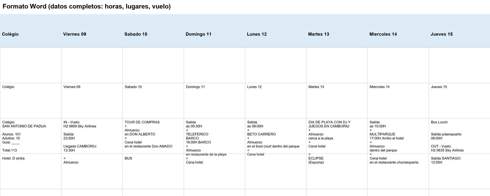
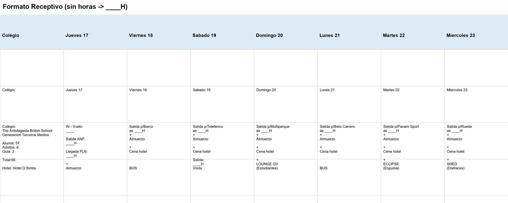
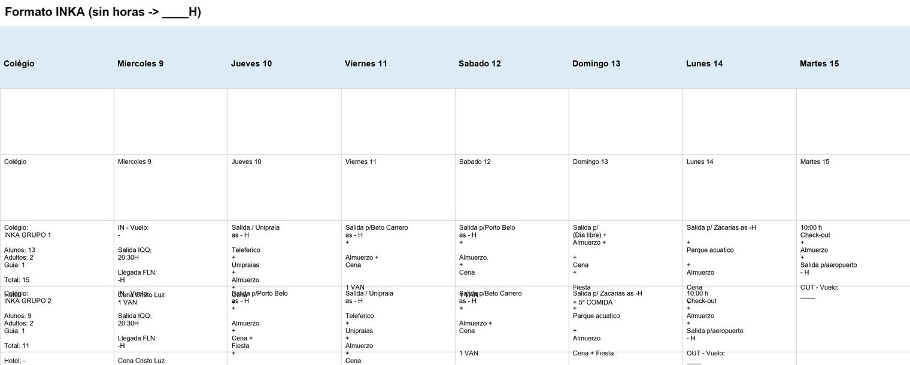

1. Qué hace el sistema
Genera planillas Excel de operaciones y programación (mapa de días) a partir de los datos de los grupos: atracciones, discos, "5ª COMIDA", IN/OUT, vuelos y traslados. Existen 3 tipos, cada uno con su fuente de datos, y todos producen el mismo estilo de salida (igual a su planilla modelo).
| Generador | Fuente de datos | Qué genera |
|---|---|---|
generador_word.py |
Documentos Word OPERACIONES ... .docx (un colegio por archivo) | SALIDA_WORD_OPERACIONES *.xlsx |
generador_receptivo.py |
Excel COLEGIOS CANTIDAD DE PASAJEROS, DISCOS, MARCACIONES (+ Rooming) | SALIDA_SISTEMA_RECEPTIVO.xlsx |
generador_operativo.py |
Excel "Control Operativo" (hoja Reservas) | SALIDA_OPERATIVO_2026.xlsx |
Salida p/ATRACCIÓN,
hora as 09:30H, sub-atracciones, restaurante del almuerzo, cena,
disco con 5ª COMIDA y el vehículo (BUS / MICRO / VAN) al final.
Si la fuente no trae un dato (hora, lugar o vuelo), se usa
el diccionario interno por atracción y se marca ____H / ____
para completar a mano. El generador no inventa datos que la fuente no trae.
2. Estructura de carpetas
Todo el sistema vive en la carpeta Marcaciones, ordenado así:
| Carpeta | Qué contiene | Mantenimiento |
|---|---|---|
codigo/ |
Los 3 generadores + la interfaz (*.py) |
No se toca a mano |
plantillas/ |
cristour_template.xlsx y inka_template.xlsx (formato base) |
Son la base del formato; no mover |
entradas/ |
Datos de entrada: Excel de colegios, Rooming y los .docx de operaciones |
Aquí se colocan los Word nuevos y se actualiza el Excel si cambia |
salidas/ |
Todas las planillas generadas (SALIDA_*.xlsx) |
Aquí quedan los resultados |
manual/ |
Este manual + imágenes | Solo lectura |
Planillas_GUI.exe |
Acceso directo a la ventana (raíz) | Doble clic para abrir |
3. Resumen de la salida
3.1 Receptivo y Word
Cada planilla generada contiene estas hojas (ejemplos del Receptivo):
| Hoja | Contenido |
|---|---|
| PROGRAMACION ... | Mapa de días por grupo: IN, actividad, discos, OUT |
| -- Atracción -- (Barco, Beto Carrero, Teleférico...) | Listado por atracción: colegio, alumnos, adultos, guía, total, hotel |
| 5 COMIDA | Eventos de quinta comida agrupados por fecha y boliche |
| COLEGIOS MAESTRO | Lista maestra de colegios |
3.2 Operativo (Control Operativo)
La salida SALIDA_OPERATIVO_2026.xlsx es idéntica al archivo de referencia
inka grupo 1 e 2 Valores.xlsx y contiene las hojas:
| Hoja | Contenido |
|---|---|
| PROGRAMACION | Bloques por grupo + mapa de días (C..I), con la fecha real de cada día |
| CRISTO LUZ · UNIPRAIA · BETO CARRERO · PORTO BELO · ZACARIAS · BARCO PIRATA | Listado por atracción (Nº, GRUPO N, alumnos, adultos, total, guía, fecha, total+guía) |
| 5 COMIDA | Eventos por fecha con servicio en blanco |
Mapeo del Itinerario Ideal (hoja Reservas) a las hojas:
| En el itinerario | Hoja |
|---|---|
| Parque Unipraias | UNIPRAIA |
| Beto Carrero World | BETO CARRERO |
| Porto Belo | PORTO BELO |
| Campamento Americano | ZACARIAS |
| Cristo Luz / Cena Cristo Luz | CRISTO LUZ (día de IN) |
| Barco Pirata | BARCO PIRATA |
| Día Libre | Sin hoja (celda de día libre) |
4. Cómo usarlo — con la ventana (recomendado)
Haga doble clic en el archivo Planillas_GUI.exe. Se abre la ventana
"Sistema de Planillas - Camboriu 2026/2027".
5. Cómo usarlo — por línea de comandos
Abra una terminal (PowerShell o CMD) dentro de la carpeta Marcaciones\codigo
y ejecute uno de estos comandos:
python generador_receptivo.py python generador_word.py python generador_operativo.py
Cada script usa sus archivos fijos (véase las tablas de arriba). Al terminar muestra un
resumen y guarda el archivo de salida en salidas/.
Particularidades de cada tipo
- Word: toma el primer
.docxque encuentre enentradas/. Por cada colegio nuevo, deje su.docxahí y corrapython generador_word.py. Las horas y lugares salen del propio Word. - Receptivo: lee
COLEGIOS CANTIDAD DE PASAJEROS, DISCOS, MARCACIONES (3).xlsxy aplica las cantidades reales delRooming 2026.xlsx. - Operativo: lee la hoja Reservas del "Control Operativo". El archivo debe
estar en
entradas/(puede llamarseControl Operativo.xlsxo ser cualquier.xlsxcon una hoja Reservas; el programa lo detecta solo). Toma como única fuente el Itinerario Ideal y las notas (hora de salida). Maneja 1 o más grupos y coloca cada día en la columna según su fecha real, aunque los grupos entren en días distintos.
5b. Instalar en otra computadora
El sistema se puede bajar de git y usar en cualquier PC:
- Descargar/clonar la carpeta
Marcaciones. - Doble clic en
Planillas_GUI.exe: es un ejecutable independiente, no necesita instalar nada. - Colocar en
entradas/los archivos de datos que correspondan (Excel de colegios, Rooming, los.docxy el "Control Operativo").
salidas/) no se suben a git; se crean al
ejecutar los generadores. Los datos de entrada sí se suben (si no querés compartir alguno,
agregalo al .gitignore). Para desarrollar (modificar el código) sí se
necesita Python + pip install -r requirements.txt y se puede ejecutar
python gui_receptivo.py desde codigo/.
6. Formato de la celda de un día
El programa arma las celdas con el diccionario interno por atracción:
para Beto Carrero escribe Salida p/Beto Carrero, para el Teleférico
Salida p/Teleférico + Youhooo + Almuerzo Rest.,
para Cascata/Zacarías el almuerzo en parque, y así. Las horas salen de ese mismo
diccionario (p. ej. Beto 09:00) o quedan ____H. En el caso del INKA se respeta
al pie de la letra el texto de las planillas modelo de INKA.

Celda típica delgenerador_word.py: las horas y lugares son reales (vienen del .docx).

Salida delgenerador_receptivo.py: misma estructura; horas y sub-atracciones de su diccionario interno.

Salida delgenerador_operativo.py: texto exacto de las planillas modelo de referencia.
7. Preguntas frecuentes
¿De dónde salen las horas y los lugares en las celdas?
El Word trae horas y restaurantes escritos en el documento. Los Excel internos no;
por eso usan el diccionario interno por atracción. Si la fuente y el diccionario
no tienen el dato, aparece ____H / ____ para completar a mano.
¿Por qué el OUT del Operativo sale ____?
Por decisión: el vuelo de regreso no se escribe solo; se completa a mano
(la referencia mostraba "SKY AIRLINES", el generador lo deja en blanco a propósito).
¿Qué pasa si en el itinerario del Control Operativo hay una atracción que no reconoce?
Esa celda de día queda en blanco y no crea hoja: el programa no inventa nombres ni datos.
¿Puedo perder mi archivo de salida al regenerar?
Sí, generador_*.py sobrescribe la salida. Guarde una copia si hizo ajustes a mano
(hay copias previas como SALIDA_OPERATIVO_2026_previo_usuario.xlsx en salidas/).
¿Dónde está la ventana?
Doble clic en Planillas_GUI.exe. Es un programa independiente: no requiere Python instalado.
(Si querés regenerarlo desde el código, se compila con
python -m PyInstaller --onefile --windowed --icon icono.ico codigo/gui_receptivo.py).